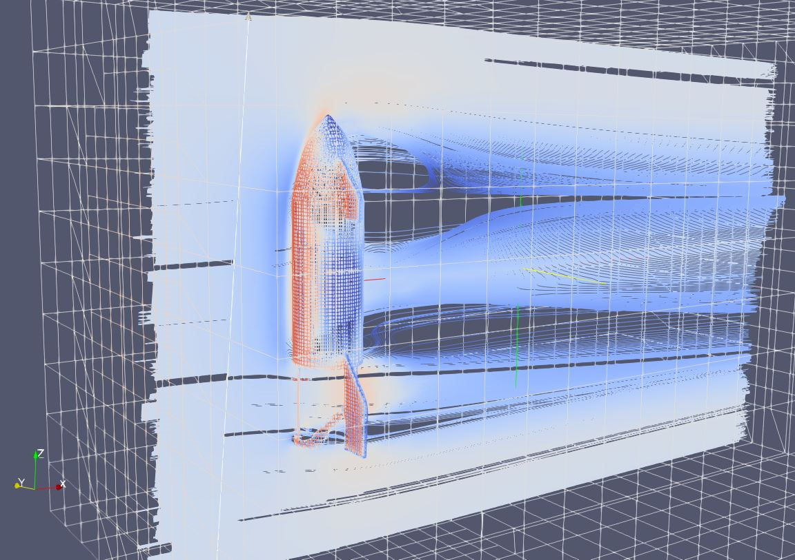
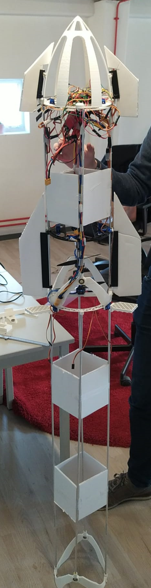
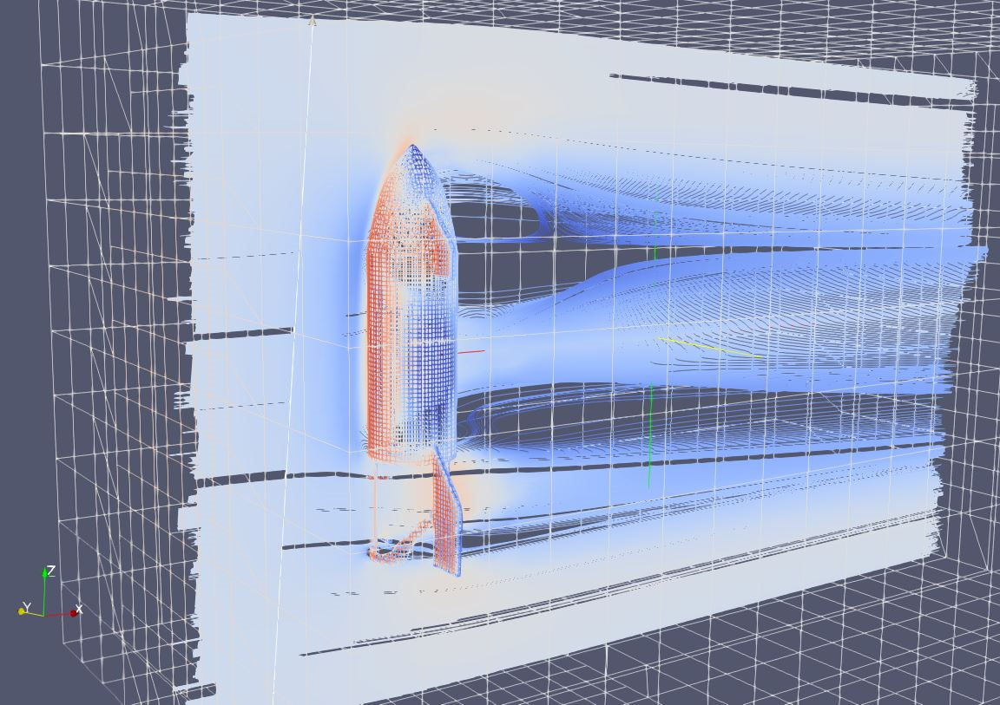
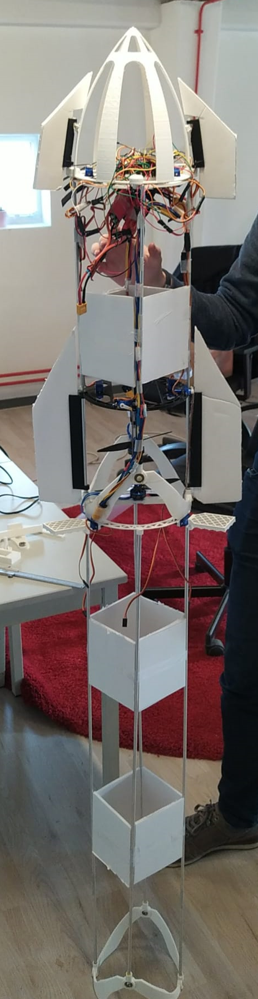

Summary

Lennart Bult and I are designing and building a thrust vector controlled drone to replicate the flight profile of a Starship test flight, including the belly flop and landing, completely autonomously. The drone is controlled using a counterrotating propeller setup with a gimbal for each propeller and using body flaps. We control the drone using a Teensy 4.1 microcontroller and an external positioning system. For indoor positioning, we developed our own camera triangulation system.
We are currently working on an outer-loop control system, simulation and validation of the belly flop maneuver, and the aerodynamic design of the drone. When we have succesfully replicated the Starship flight profile, we will add the Super Heavy stage to the replica. We are currently also considering the feasibility of replicating the Stage Zero Starship catching mechanism.
More details
Motivation and inspiration
The inspiration for this project came in 2020 when I watched the Starship SN8 flight with some friends. The belly flop and subsequent landing of SN10 left a lasting impression on me, as it seemed like something straight out of science fiction [1]. From that moment, I knew I wanted to replicate those maneuvers in some way.
It seems that others had the same idea after watching the Starship flight. Soon after the SN8 flight, Nicholas Rehm built a manually controlled, thrust vectored Starship replica drone [2]. Around the same time, Joe Barnard was working on his sprite test vehicle [3] to demonstrate fully autonomous thrust vector control for his Falcon-9-style landing model rockets.
Inspired by these projects, my friend Lennart Bult and I decided to build our own autonomous Starship replica drone. Our goal was to replicate the flight profile of a Starship test flight, including the belly flop and landing, completely autonomously.
Preliminary design
We based a lot of our preliminary design on Nicholas Rehm's drone, which used a counterrotating propeller setup with a gimbal for each propeller. This setup is preferred because it removes the adverse yaw generated by the acceleration of the propellers and the conservation of angular momentum. It also allows for thrust vectoring in the two horizontal axes and for controlling the yaw by differentially accelerating the two propellers. The only change we made to this basic design was to go with a slightly more powerful propulsion system, as we wanted the option of including more computing power on the drone for autonomous flights.
To get a good idea of the drone's performance, we used the eCalc xcopterCalc tool [4] for rapid prototyping of the design. In retrospect, the predictions of this tool were surprisingly accurate. The largest constraint we had was the small inline propeller diameter, which severely limited the propulsive efficiency we could achieve. ECalc estimates our efficiency at 3.35 g/W which is quite low compared to 10 g/W for a typical quadcopter.
One of the things we wanted to verify first was the thrust we could expect from our counterrotating propeller setup. We used the eCalc tool to calculate the thrust, but it does not take into account interactions between the propellers. So, we went straight to the test bench and measured the thrust of our system. We found that the thrust at full throttle was 1.2 kg. We also measured the thrust of the propellers individually and found that the counterrotating setup only incurred a 15% loss in thrust compared to putting the same propellers in parallel, which was better than we expected based on reading RC group forums.
This higher-than-expected thrust was a good thing because we had overshot the mass budget for the rest of the drone by about 20%. Fortunately, these changes mostly cancelled each other out, and only the flight time of the drone was slightly shorter (around 4 minutes in pure hover). Below is a list of the components we used for the drone for reference:
| Part | Description | Amount |
|---|---|---|
| Motors | XING-E 2306 2450kv | 2 |
| Propellers | 6040 Carbon Fiber | 2 |
| ESC | Turningy Plush-32 40A with BEC | 2 |
| Battery | Turningy 4S 2200mAh 60C | 1 |
Flight control and electronics
To control the drone, we decided to split the control system into two parts: an inner loop that controls the drone's attitude and an outer loop that controls the drone's position. The inner loop keeps the drone level and stable, while the outer loop directs its movement in space.
For the inner loop, we heavily modified Nicholas Rehm's amazing dRehmFlight flight controller [5]. This flight controller uses inertial information to estimate the drone's attitude and then uses PID controllers to stabilize the drone. The controller runs on the Teensy 4.1 microcontroller and uses a MPU6050 IMU for attitude estimation using a Madgwick filter. It also has limited support for the usage of the MPU9250 IMU, which has an integrated magnetometer. However, after integration, we found that the MPU9250's magnetometer was not accurate enough for our purposes. As a result, we upgraded to a BNO055 IMU, which handles sensor fusion internally. Below is a further overview of the inner loop control system:
| Component | Description | Notes |
|---|---|---|
| Inner loop controller | Teensy 4.1 | Selected for the 600 Mhz clock speed. |
| IMU | MPU6050/ MPU9250 (integrated magnetometer) / BNO055 (integrated sensor fusion) |
We found the output of the MPU9250 to be inferior to the BNO055. |
| Sensor Fusion algorithm | Quaternion Madgwick filter | When using the BNO055, the sensor fusion is outsourced to the IMU itself. |
| Inner loop control algortihm | PID controllers | dRehmFlight stabilises the drone attitude using simple PID controllers. |
| Handheld Radio | FrSky Taranis + X8R | This radio system is used for manually providing inputs to the drone. |
| Telemetry | NRF24L01+ 2.4GHz | This radio system is used for all other bidirectional communication. |
Integrating the advanced IMUs into the dRehmFlight flight controller was not an easy task, especially since this was the first time this particular combination of sensors and microcontrollers had been used with dRehmFlight. However, after some work, we were able to get everything working and contributed our knowledge to the dRehmFlight forums, assisting others with similar difficulties [6].
As you can see in the above video, even with inner loop stabilisation (kinda) working, there is still a lot of drift and sway in the position of the drone. This is because it is hard to sense the drone's position in space using only the IMU. This is the point where we started developing the outer loop control system, which is a pretty hard problem with the sensor set that we have. We are currently working on this aspect of the project and will update this page with more information as we progress.
Positioning system
To enable the outer loop control system, we needed a way to determine the drone's position in space. For outdoor flights, we plan to use a GPS system, but for indoor flights we needed a different solution. We decided to quickly develop an external tracking system using our smartphones and the OpenCV library. This system uses the cameras on the smartphones to detect the drone and then triangulates its position in space using the cameras' known orientation and relative position. While the system doesn't produce highly accurate results, it is sufficient for the development of the outer loop control system.
This system was runs on a central computer that communicates with the smartphones via a local WiFi network. The drone is tracked using the OpenCV CSRT tracker [7], which runs at approximately 40 FPS for the two merged camera streams on my laptop (Intel i7-8750H, 16GB RAM, Nvidia RTX 2080). The whole system, including communication, provides a position estimate at a rate of about 30 Hz, which is sufficient for drift correction. The picture on the right shows the point cloud generated by the system when tracking the starship, which I moved in a star shape.
We are also considering the use of inside-out tracking systems, especially if we find that the outside GPS odometry is not accurate or fast enough. However, this would be a costly step, so we are weighing our options. The results of Joe Barnard [3] are promising, but our flight profile may be more demanding.
Further work
We are currently working on the outer loop control system and are planning to integrate it with the inner loop control system. We are also currently working on simulating the belly flop maneuver, both from the aerodynamic and control system perspective. This part of the flight profile will be the most challenging, as it will involve high potential energies and a loss of control might result in a crash as with the Starships and Nicholas' drone [2].
Once these aspects of the project are completed, we will start working on a super heavy (booster) version of the drone. This way we can also replicate the flight profile of the complete Starship stack. We are also playing around with the idea of catching the drone as it lands, such as SpaceX, but this is still in the early stages of development.
 



References
- [1] SpaceX, “Starship | SN10 | High-Altitude Flight Recap,” YouTube, Mar. 16, 2021. https://www.youtube.com/watch?v=gA6ppby3JC8 (accessed Dec. 26, 2022).
- [2] N. Rehm, “Radio Controlled SpaceX Starship Belly Flop,” YouTube, Dec. 08, 2020. https://www.youtube.com/watch?v=5lwH7xJnB4I (accessed Dec. 26, 2022).
- [3] J. Barnard, “Sprite 40 Second Hover - 0.6m, No Afterburner,” YouTube, Feb. 05, 2020. https://www.youtube.com/watch?v=Y4bytFONIUI (accessed Dec. 26, 2022)
- [4] M. Mueller, “eCalc - xcopterCalc - the most reliable Multicopter Calculator on the Web,” eCalc, https://www.ecalc.ch/xcoptercalc.php (accessed Dec. 26, 2022).
- [5] N. Rehm, “GitHub - nickrehm/dRehmFlight: Teensy/Arduino flight controller and stabilization for small-scale VTOL vehicles,” GitHub, Nov. 08, 2022. https://github.com/nickrehm/dRehmFlight (accessed Dec. 26, 2022).
- [6] “dRehmFlight VTOL - Teensy Flight Controller and Stabilization - Page 65 - RC Groups,” RC Groups. https://www.rcgroups.com/forums/showthread.php?3706571-dRehmFlight-VTOL-Teensy-Flight-Controller-and-Stabilization/page65 (accessed Dec. 26, 2022)
- [7] “OpenCV CSRT Tracker,” OpenCV, https://docs.opencv.org/3.4/d2/da2/classcv_1_1TrackerCSRT.html (accessed Dec. 26, 2022).